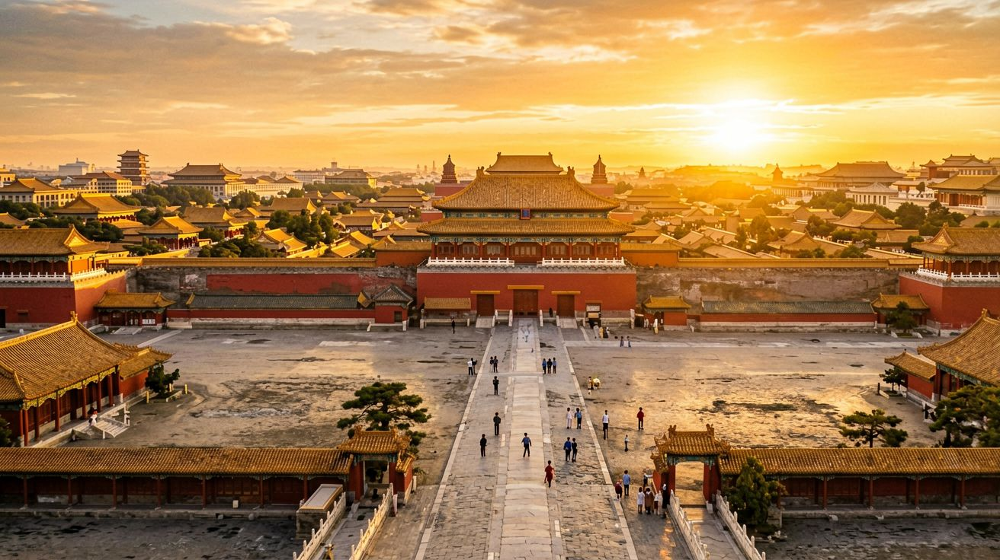
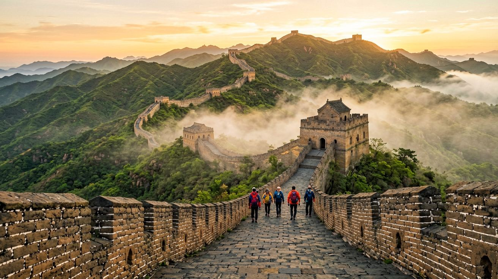
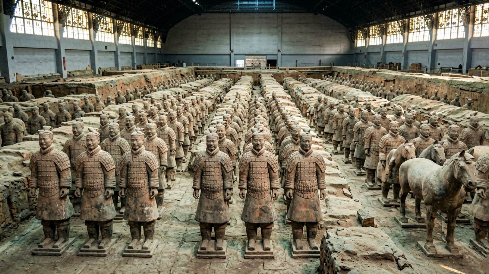
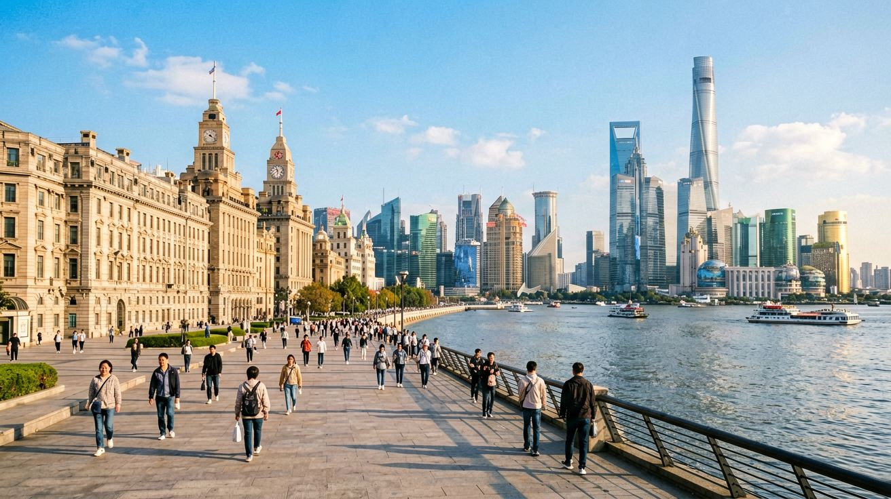
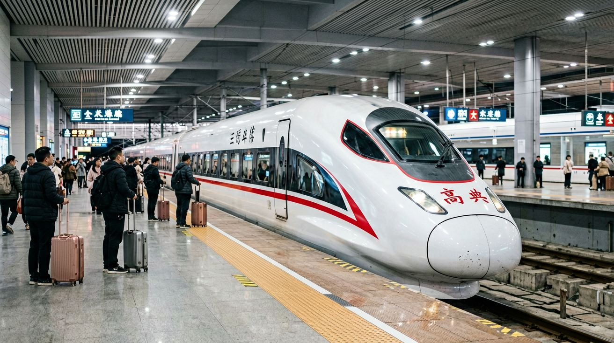

Last updated: June 2026.
Planning a first trip to China often starts with a blank map and too many options. The country is roughly the size of Europe, and trying to see everything in one visit is a recipe for burnout. This is where the Beijing–Xi'an–Shanghai triangle comes in. It is the most popular multi-city route for a reason: it connects three cities that together tell the story of China's past, present, and future, all linked by reliable high-speed trains. In 10 days you can walk the Great Wall, stand in front of the Terracotta Army, and watch the Pudong skyline light up at dusk — without feeling rushed.
This itinerary is designed for a first-time visitor who wants a balance of history, culture, and modern city experiences. Each stop is covered in enough depth that you leave with a real sense of the place, not just a checklist of photos.

The Beijing–Xi'an–Shanghai triangle has stood the test of time as China's classic tourist loop. Beijing gives you imperial grandeur — the Forbidden City, the Great Wall, the Temple of Heaven — the China of emperors and dynasties. Xi'an takes you further back, to the Silk Road and the first unified Chinese empire under Qin Shi Huang. Shanghai then catapults you into the 21st century with its futuristic skyline and creative energy.
What makes this route especially practical is the high-speed rail network. All three cities are connected by trains that run frequently throughout the day. The Beijing–Xi'an leg takes roughly 4.5 to 5.5 hours on G-class trains. Xi'an to Shanghai is longer — around 6 to 7.5 hours — but you can break it with an overnight sleeper or a short flight if you prefer. Beijing to Shanghai, if you were to reverse the order, is the fastest: about 4 hours 18 minutes on the fastest G trains. Throughout this itinerary I assume you will move by train, which is the most scenic and least stressful option, and keep flights only as a backup.
Ten days gives you three full days in Beijing, two in Xi'an, three in Shanghai, and two travel days for the train journeys. It is tight but achievable. If you can stretch to 12 or 14 days, add an extra day in Xi'an to see Huashan Mountain, or give Shanghai a day trip to a nearby water town.

Day 1 — The Heart of Imperial Beijing. Start your trip at Tiananmen Square in the morning. It is the largest public square in the world and the symbolic center of modern China. From the square, walk through the Gate of Heavenly Peace into the Forbidden City. You need to reserve tickets in advance through the official Palace Museum WeChat mini-program or the Palace Museum website. Same-day tickets are not available. The full walk from the south Meridian Gate to the north Gate of Divine Prowess takes about two to three hours at a relaxed pace.
After exiting the Forbidden City, cross the street to Jingshan Park and climb the artificial hill. From the Wanchun Pavilion at the top, you get the classic panorama of the Forbidden City's sea of yellow roofs — the photo every visitor to Beijing wants. Spend your evening wandering through the Nanluoguxiang hutong neighborhood and grab dinner at one of the small courtyard restaurants there.
Day 2 — The Great Wall. There are several sections of the Great Wall near Beijing. Badaling is the most famous and most crowded. Mutianyu is a better choice: fully restored, less packed, and surrounded by dense forest that turns golden in autumn. You can reach Mutianyu by taking the tourist bus line 867 from Dongzhimen, or by hiring a private car for the day through your hotel or through Trip.com. The round trip from central Beijing takes the better part of a day. At the wall itself, you can hike two or three hours along the restored section, and take the toboggan slide down — a fun way to finish.
If you are visiting between April and October, try to go on a weekday. Weekends and Chinese public holidays turn even Mutianyu into a slow-moving queue. Bring sunscreen and plenty of water regardless of the season.
Day 3 — Parks, Temples, and Farewell to Beijing. Spend your last Beijing morning at the Temple of Heaven. Go early — locals gather here before 8 a.m. to practice tai chi, play Chinese chess, and sing opera in the park surrounding the temple complex. The Hall of Prayer for Good Harvests is the circular wooden structure you have probably seen on postcards. After the temple, head to the Summer Palace in the northwest of the city. The Kunming Lake and the Long Corridor are the highlights. In the evening, catch your train to Xi'an from Beijing West Railway Station. Aim for a late-afternoon departure so you arrive in Xi'an by 10 or 11 p.m., giving you a full day there tomorrow.

Day 4 — The Terracotta Army. This is the reason you came to Xi'an. The Terracotta Warriors were buried with China's first emperor, Qin Shi Huang, around 210 BCE, and were discovered by farmers digging a well in 1974. The museum is about 40 kilometers east of the city center. You can take public bus 306 (also labeled Tourist Bus 5) from Xi'an Railway Station — the ride takes about an hour. Alternatively, book a Didi through the app for roughly 100 yuan each way.
There are three pits open to the public. Pit 1 is the largest and most dramatic — row after row of life-size soldiers, each with a unique face. Pit 2 has the cavalry and chariots. Pit 3 is the command post. Budget at least three hours for the museum. Audio guides in multiple languages are available at the entrance. Avoid the unofficial "guides" who approach you in the parking lot.
Back in the city by late afternoon, walk or cycle along the top of the Xi'an City Wall. Built during the Ming dynasty in the 14th century, it is the most complete ancient city wall in China. You can rent a bicycle on top of the wall and ride the full 14-kilometer loop in about 90 minutes. It is especially beautiful at sunset when the old city inside the wall glows warm orange.
Day 5 — Muslim Quarter and Departure. Spend your morning exploring the Muslim Quarter, a lively neighborhood of narrow lanes behind the Drum Tower. This is the best place in Xi'an to eat. Try yangrou paomo (flatbread soaked in lamb soup), grilled lamb skewers dusted with cumin, and cold liangpi noodles with chili oil. The Great Mosque, one of the oldest in China, sits in the middle of the quarter — its architecture is a fascinating blend of Chinese temple design and Islamic function.
In the afternoon, head to Xi'an North Railway Station for your train to Shanghai. The journey takes about 6 to 7.5 hours. Book a second-class seat for comfort and a window on the right side for views of the Qinling Mountains early in the trip. You will arrive in Shanghai after dark — check into your hotel and get ready for the final leg of the journey.

Day 6 — The Bund and Old Shanghai. After the intensity of Beijing and Xi'an, Shanghai feels like a different country. Start your day on the Bund, the waterfront promenade along the Huangpu River. On one side you face the colonial-era buildings of the 1920s — the former Hong Kong and Shanghai Bank, the Customs House, the Peace Hotel. On the other side, across the river, the Pudong skyline rises like a sci-fi movie set. Walk the full kilometer from the Waibaidu Bridge in the north to Yan'an Road in the south.
From the Bund, walk inland about 20 minutes to the Yu Garden and the surrounding bazaar. The garden itself, built in the Ming dynasty, is a compact masterpiece of rockeries, pavilions, and carp ponds. The bazaar outside is touristy but fun — a good place to pick up souvenirs and snack on xiaolongbao (soup dumplings) at the famous Nanxiang Steamed Bun Restaurant.
Day 7 — The French Concession and Jing'an. The former French Concession is Shanghai's most walkable neighborhood. The streets here are lined with plane trees, and the low-rise lane houses have been converted into cafés, boutiques, and small galleries. Start on Wukang Road and wander south toward the intersection of Huaihai Road and Wulumuqi Road. Stop for coffee, browse the shops, and watch Shanghai's creative class go about their day.
In the afternoon, head to Jing'an Temple. The golden-roofed Buddhist temple sits improbably in the middle of a busy shopping district, surrounded by glass skyscrapers. It is a striking image of old and new Shanghai colliding. After visiting the temple, walk east on Nanjing West Road for some of the best shopping in the city, or continue to People's Square to visit the Shanghai Museum, which has an outstanding collection of ancient Chinese bronzes and ceramics — and free entry.
Day 8 — Pudong and a Day Out. Take the Bund Sightseeing Tunnel or metro line 2 across the river to Pudong. Go up one of the towers for the view: the Shanghai Tower at 632 meters is the tallest building in China, with an observation deck on the 118th floor. The Jin Mao Tower and the Shanghai World Financial Center (the "bottle opener") are also nearby, each with their own observation decks. Tickets can be bought on site or through Trip.com, with small discounts online.
For the afternoon, consider a half-day trip to Zhujiajiao, an ancient water town about an hour west of Shanghai by metro (line 17 to Zhujiajiao Station). Crisscrossed by canals and stone bridges, it is a quieter, more traditional side of the Shanghai region. If you prefer to stay in the city, the Power Station of Art in a converted former power plant on the Huangpu River hosts excellent contemporary art exhibitions.

China's high-speed rail network is the largest in the world, and for this route it is by far the best way to travel. Here is what you need to know for each leg.
Beijing to Xi'an. Trains depart from Beijing West Railway Station. The fastest G-class trains take about 4 hours 20 minutes. A second-class seat costs approximately 515 yuan. There are departures throughout the day, roughly every 30 minutes from early morning to late afternoon. Book tickets through the Trip.com app or website, which accepts international credit cards. If you use the official 12306 app, you will need a Chinese phone number to register.
Xi'an to Shanghai. Trains depart from Xi'an North Railway Station. This is a longer ride — 6 to 7.5 hours depending on the specific train. Second-class seats start around 670 yuan. If the idea of a full day on a train does not appeal, you can take an overnight sleeper train. The soft sleeper compartment has four bunks and is comfortable enough for a night's rest. There is also the option of a 2.5-hour flight from Xi'an Xianyang Airport to Shanghai Pudong or Hongqiao, typically costing between 500 and 900 yuan depending on how far in advance you book.
A note on train stations. Every major Chinese city has multiple railway stations. Beijing alone has Beijing West, Beijing South, Beijing North, and the main Beijing Station. Always double-check your ticket to confirm which station your train departs from. Xi'an North is about 20 kilometers north of the city center, connected by metro line 2. Shanghai Hongqiao Railway Station is integrated with Hongqiao Airport and metro lines 2, 10, and 17.
Booking tips. Book your train tickets at least three to five days ahead during regular travel periods. During Chinese holidays — especially Spring Festival (late January or February), the first week of October, and the first week of May — book two to three weeks ahead or expect sold-out trains. Tickets go on sale 15 days before departure on the official 12306 system.
This 10-day triangle gives you a powerful introduction to China: the ancient capital, the Silk Road starting point, and the city that never stops reinventing itself. If you have the flexibility to add a couple of days, use them in Xi'an — the city rewards slow exploration more than the other two. But even if you stick to exactly 10 days, you will leave with a real understanding of why this route has been traveled for centuries.